说明：规则健康度
一、背景
规则健康度是通过数据分析对Zeus上用户的配置数据进行健康治理，包含：错误/不合理配置、冗余配置、冗余执行和性能异常等，从而提升平台整体数据有效率同时在业务使用成本上实现降本提效。
此外：（1）通过规则健康度功能，帮助业务/用户实现规则从部署、验证评估、上线、上线后评估的生命周期管理，进而提升平台易用性（2）风险阈内的识别率，可以简单的看作∑策略条数*单条策略识别率，为维持稳定目前发现业务主要在“策略条数增长”较多，但策略的数量不是越多越好，随之会带策略的管理瓶颈、执行性能瓶颈。故从平台单条策略的生命周期入手，帮助用户发现进入衰减期的策略，从而实现策略识别的有效和稳定（对进入衰减期的策略并不关心一般是让这些策略自生自灭，关注的核心是怎么构建新的策略去不断覆盖风险敞口，共同目标一致）
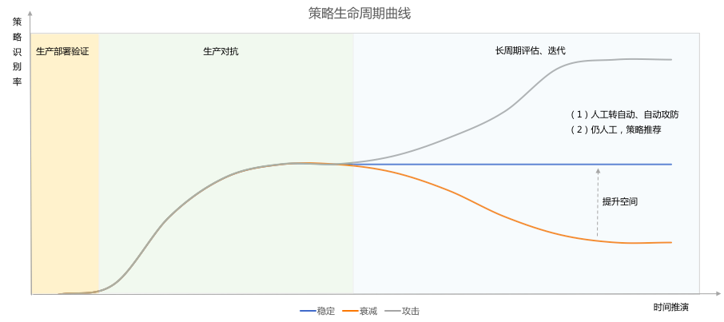
二、名词解释
- 健康度：是用户在Zeus上配置数据健康情况的度量，可分为配置、逻辑、性能和智能化四类健康度。是否健康的衡量标准，主要通过通用识别逻辑进行数据统计，将满足“不健康”识别逻辑的数据进行推送，邀请用户进行处理。
- 配置健康度：主要对Zeus上“参数、数据接口、因子（普通、累计、名单等）、因子工具、规则、规则组、场景配置”等维度，进行配置的语法的正确性、配置后180天内是否使用进行识别，对于错误及冗余类配置进行治理，包含累计大key、大value等
- 逻辑健康度：主要是包含两方面：（1）业务方通过对Zeus上配置的场景配置与最终决策进行分析，将逻辑相似、识别范围相同、命中量重复的场景配置进行治理（2）Zeus通过对场景配置逻辑相似度进行数据分析，将逻辑相似、命中量重复的场景配置进行识别和推送，综合提升但场景识别规则有效率
三、操作指南
1.用户操作流程说明
- 系统默认识别逻辑
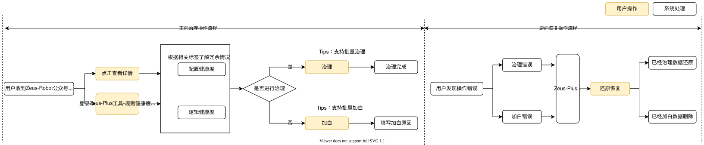
- 用户自定义识别逻辑
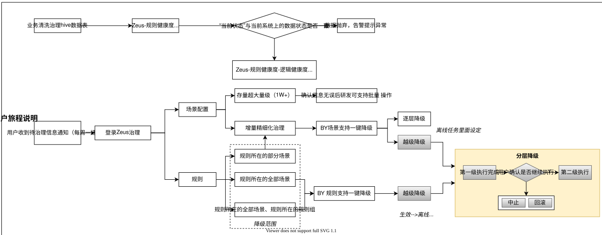
2.Quick Start
--待补充--
3.详细操作流程说明
Step1: 规则健康度入口
|
说明 |
页面 |
|---|---|
|
【入口1】 大象公众号推送中的“查看详情” |
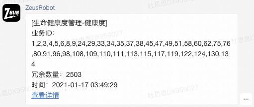 |
|
【入口2】 Zeus-->Plus+工具-->规则健康度 |
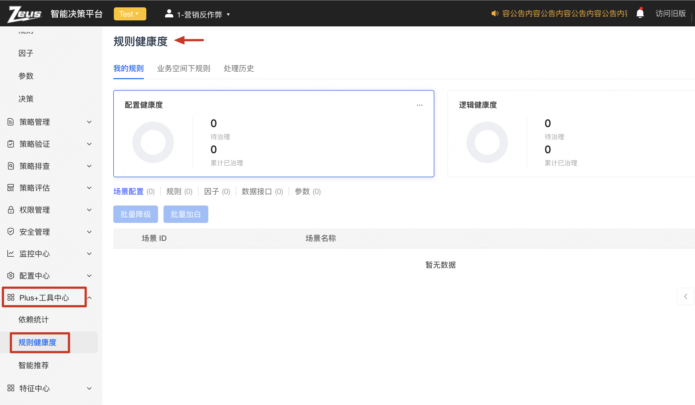 |
Step2: 进行治理
|
说明 |
页面 |
|---|---|
|
【治理操作】 我的规则
业务空间下规则
处理历史
|
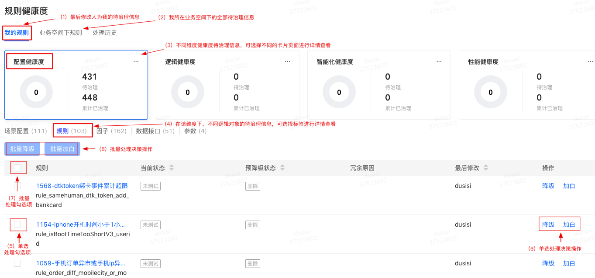 对配置健康度下的“规则”进行“降级”治理 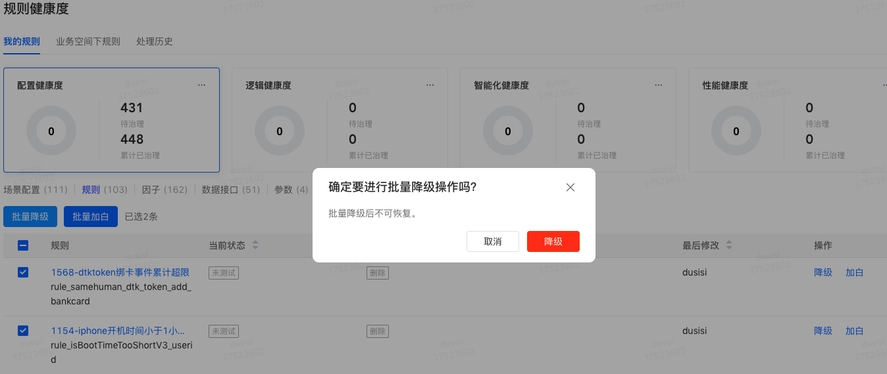 对配置健康度下的“规则”进行“加白”治理 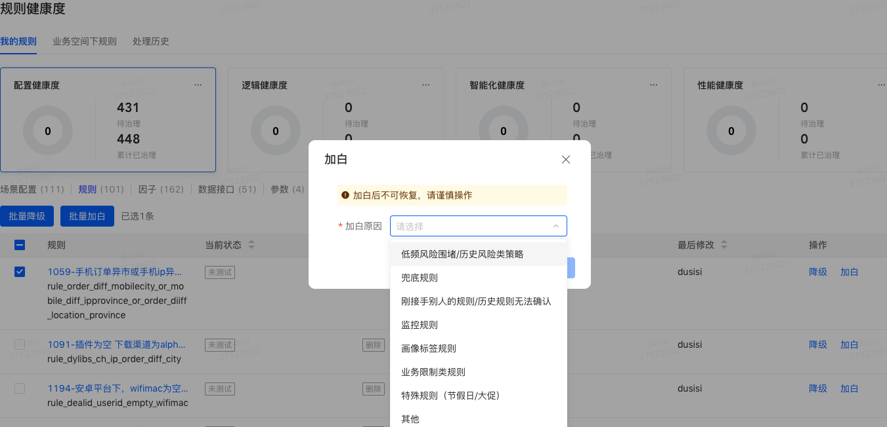 |
Step3: 治理异常SOP
|
说明 |
页面 |
|---|---|
|
【入口】 Zeus-->Plus+工具-->规则健康度-->处理历史 【治理异常的恢复机制】
|
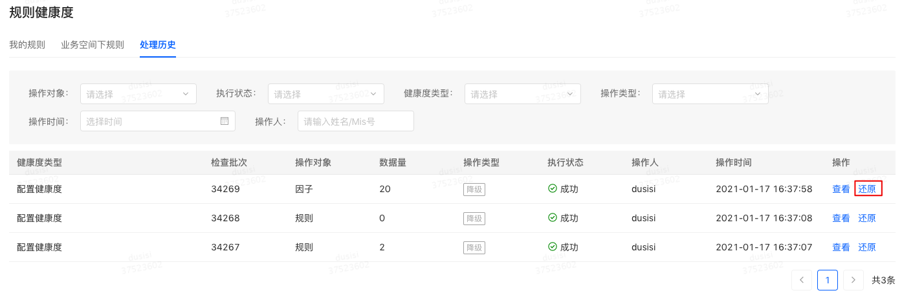 查看 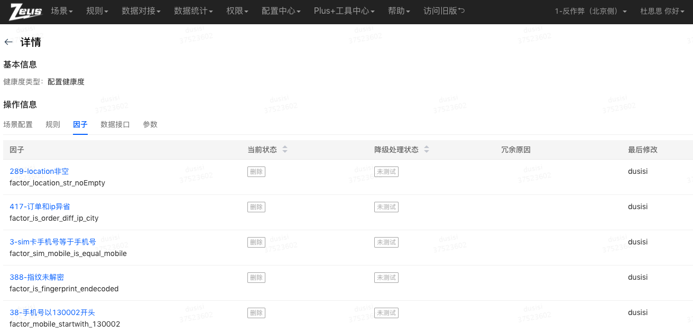 |
Step4: 逻辑健康度-业务自定义冗余治理
|
说明 |
页面 |
||||||||||||||||||||||||||||||
|---|---|---|---|---|---|---|---|---|---|---|---|---|---|---|---|---|---|---|---|---|---|---|---|---|---|---|---|---|---|---|---|
|
【入口】 Zeus-->Plus+工具-->规则健康度-->我的规则-->逻辑健康度-->配置计算逻辑 【配置计算逻辑】
|
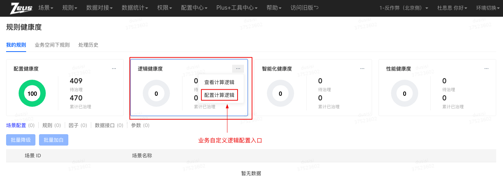 配置计算逻辑 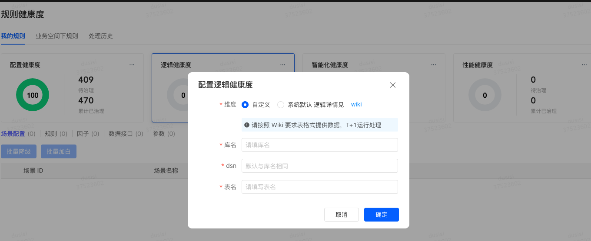 |
||||||||||||||||||||||||||||||
|
【逻辑健康度】
*逻辑健康度的定义是线上执行的逻辑是否有冗余，一般在场景配置、规则和累计因子上，当上述逻辑治理完成后，规则、因子、数据接口和参数可以转为配置健康度的治理 |
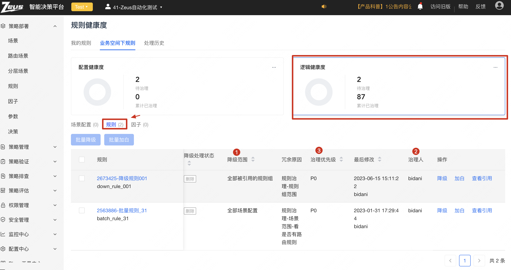 |
4.特殊说明
（1）对于场景配置、规则、因子、数据接口、参数进行了“删除”操作的处理是不支持还原的；
（2）对于单条场景配置操作降级，为单条降级；对多条场景配置、逻辑健康度下的规则操作降级，为批量降级，其中对于规则由生效状态直接降级为离线状态，系统将弹窗提示用户“生效降至离线状态，操作风险指数较高，系统将分步执行，第一阶段生效—>标记，第二阶段标记—>离线。阶段一至阶段二将以大象通知周知”，大象通知见模版
（3）业务hive表字段说明
|
健康度类型 |
治理维度 |
明细 |
预降级状态 |
降级范围 |
冗余原因 |
治理优先级 |
治理人 |
|---|---|---|---|---|---|---|---|
|
逻辑健康度 |
场景配置 |
场景配置ID |
标记/离线/删除 |
空 |
空/XXX.... |
空/P0/P1/P2.... |
空/misid |
|
逻辑健康度 |
规则 |
规则ID/名称 |
标记/离线/删除 |
全部场景/全部规则组/全部场景和规则组 |
空/XXX.... |
空/P0/P1/P2.... |
空/misid |
上述字段英文名/枚举值说明
|
中文名称 |
字段名 |
字段类型 |
说明 |
|---|---|---|---|
|
治理维度 |
type |
int |
治理维度 : 0表示场景规则, 1表示规则 |
|
明细 |
scene_id |
int |
场景id, 治理维度为1时可不填 |
|
rule_id |
int |
规则id |
|
|
预降级状态 |
downgrade_status |
int |
预降级状态：32-标记 0-离线 -128-删除 |
|
降级范围 |
downgrade_scope |
int |
降级范围：0-全部场景 1-全部规则组 2-全部场景和规则组 治理维度为0时不用填 |
|
冗余原因 |
reason |
str |
冗余原因 |
|
治理优先级 |
priority |
int |
治理优先级： 0-P0 1-P1 2-P2 |
|
治理人 |
administrator |
str |
治理人mis |
四、FAQ
Q1：配置健康度的识别逻辑是什么？
--A：配置健康度的识别逻辑均是基于“参数、数据接口、因子（普通、累计、名单等）、因子工具、规则、规则组、场景配置”对象配置后没有测试完成或者配置完成但长时间（180天+）没有被使用的 ，具体详情见学城文档 373817480（无权限读取标题）
Q2：不进行治理会怎样？
--A：Zeus-robot仍会定期推送，Zeus平台会定期同步所有业务线平台使用的健康情况，对于健康度不好且也不治理的业务，将形成VIP服务联动机制，帮助业务提升健康度。
Q3：进行健康度治理，有什么好处？
--A：对于个人，便于平台上有效信息的查询和使用，同时在个人所负责风险域场景的可用性和稳定性会进一步提升；对于业务方/业务线，业务侧季度/年度的分摊成本将通过健康度优化有所下降；
Q4：业务有自己的冗余识别逻辑，支持配置到平台上么？
--A：支持，可参考3-3 Step4 步骤
Q5：平台上现有的识别逻辑，我有需要补充/质疑的，如何实现？
--A：若是业务自定义逻辑，可参考Q4问题的答案；若是认为该逻辑是通用逻辑，可联系Zeus-PM进行逻辑补充/质疑沟通